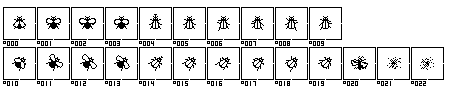
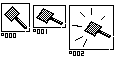

<!DOCTYPE html>
<html lang="en">
<head>
	<meta charset="utf-8">
	<meta name="viewport" content="width=device-width, initial-scale=1">
	<title>µCSS Demos — FlyEx</title>
	<link rel="stylesheet" href="../shared/demo-chrome.css">
	<link rel="stylesheet" href="dist/demo.css">
</head>
<body class="demo-page demo-page--flyex">
	<div class="demo-shell">
		<aside class="demo-panel">
			<p class="demo-back"><a href="../">µCSS Demos</a></p>
			<h1>FlyEx</h1>
			<p>
				Remake of a classic <strong>Atari ST desktop gimmick</strong>: a fly crosses the screen,
				you swat it. Original hand-pixelled DSD strips, <strong>FlyEx</strong> macro (80+ CSS rules),
				<strong>µAU</strong> sound atlas.
			</p>
			<section class="demo-sources">
				<h2>Source strips</h2>
				<figure>
					
					<figcaption><code>flyex.png</code> — 23 cells (straight + diagonal + dead/dirt)</figcaption>
				</figure>
				<figure>
					
					<figcaption><code>flyexutils.png</code> — swatter clap frames</figcaption>
				</figure>
			</section>
			<p class="demo-hint">Click the play area once for sound · then click the fly to swat</p>
		</aside>
		<main id="fx-root" class="demo-canvas is-idle" tabindex="0" aria-label="FlyEx play area"></main>
	</div>
	<script type="module" src="demo.js"></script>
</body>
</html>
